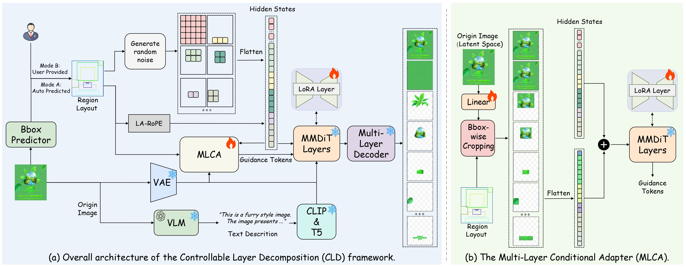

Peel a finished design apart
Hover to match boxes with layers. Drag the slider to separate the stack.
CLD separates a flattened image into editable RGBA layers, guided by bounding boxes. LayerDecompose-DiT generates region-specific layers, while the Multi-Layer Conditional Adapter aligns them with the input image. Detector-predicted or user-defined boxes control the decomposition. A new benchmark evaluates quality, efficiency, and controllability. The recovered layers can be edited independently in tools such as PowerPoint.
Bounding boxes guide each layer
Each box defines a layer. CLD generates within these regions to reduce computation.

Region-aware tokens
Generate tokens only within each box, supporting up to 37 layers on one GPU.
Aligned conditioning
MLCA aligns image features with layer tokens to preserve spatial detail.
Dual-condition CFG
Keep image conditioning in both branches to reduce background colour leakage.
Automatic or user-guided
Compare detector-predicted boxes with user-defined boxes. Click a layer to enlarge it.
Sloppy boxes are fine
Increase box noise from 0% to 20% to compare the recovered layers.
Edit each layer independently
Edit the recovered layers in your browser, then export the composition as a PNG.
Up to 37 layers on one GPU
Region-based generation reduces token usage. Compare inference time as layer count grows.
On the 1,000-image PrismLayersPro test split, CLD reaches 37 layers. Qwen-Image-Layered runs out of memory at seven.
| Method | Bbox | Layers | RGB_L1 ↓ | IoU ↑ | Overall ↓ | Semantic ↑ | Visual ↑ | Editability ↑ |
|---|---|---|---|---|---|---|---|---|
| LayerD | — | — | 0.0504 | 0.5945 | 0.2280 | 3.978 | 3.808 | 4.043 |
| Sam2 + Inpaint | GT | — | 0.0614 | 0.7546 | 0.1534 | 4.015 | 3.633 | 4.124 |
| Qwen-Image-Layered | — | 2 | 0.0435 | 0.6348 | 0.2044 | 4.022 | 3.920 | 4.054 |
| Qwen-Image-Layered | — | 3 | 0.0255 | 0.6401 | 0.1927 | 4.019 | 3.900 | 4.084 |
| Qwen-Image-Layered | — | 4 | 0.0265 | 0.5919 | 0.2173 | 4.035 | 3.878 | 4.101 |
| Qwen-Image-Layered | — | 5 | 0.0324 | 0.5434 | 0.2445 | 4.043 | 3.864 | 4.104 |
| Qwen-Image-Layered | — | 6 | 0.0398 | 0.4934 | 0.2732 | 4.045 | 3.859 | 4.110 |
| CLD (ours) | Pred | — | 0.0164 | 0.7219 | 0.1472 | 4.099 | 3.913 | 4.162 |
PrismLayersPro test split. GT = ground-truth boxes; Pred = Qwen3-VL detector boxes. Reconstruction metrics: RGB_L1, IoU, Overall. Q-Insight scores: Semantic, Visual, Editability.
More decompositions
Hover to preview individual layers. Click to enlarge.